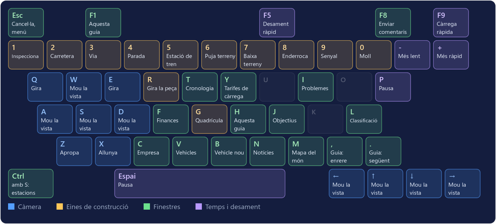

Controls
Teclat, ratolí i ratolí tàctil, al Windows i al Mac.
Les tecles de color fan alguna cosa. El color indica de quina mena.


Moure la vista
| Ratolí | Ratolí tàctil | Teclat | |
|---|---|---|---|
| Mou la vista | Arrossega amb el botó dret. Amb Inspecciona, també amb l'esquerre. | Fes lliscar dos dits. | W A S D o les fletxes. |
| Zoom | Fes girar la roda. | Pessiga, o mantén Ctrl i fes lliscar. | Z i X, o Page Up i Page Down. |
| Gira | Arrossega amb el botó central, o mantén Alt i arrossega. | Mantén Alt i fes lliscar cap als costats. | Q i E, un quart de volta cadascuna. |
- La vista també es mou quan el ratolí toca la vora de la pantalla. Es pot desactivar a Configuració.
- Prefereixes fer zoom lliscant al ratolí tàctil? Activa Desplaçar amb dos dits fa zoom a Configuració; llavors Ctrl i lliscar mou la vista.
Construir i inspeccionar
- Botó esquerre: fa servir l'eina actual. Fes clic per col·locar, arrossega per construir línies i àrees.
- Clic dret: cancel·la. El primer clic anul·la l'arrossegament en curs; el següent deixa anar l'eina.
- Esc fa el mateix, després tanca la finestra del damunt i després obre el menú del joc.
- R gira una estació, un dipòsit o un aeroport abans de col·locar-lo. Amb una eina de pont canvia l'estil del pont.
- Amb Inspecciona, el punter es torna una mà sobre tot el que es pot obrir, i un anell marca el vehicle que obriria un clic. On coincideixen diverses coses, fes clic un altre cop per passar a la següent.
- Deixa el punter sobre un vehicle i la seva ruta es dibuixa al mapa amb el color de la seva empresa, amb les parades numerades en ordre. Es manté a la vista mentre la finestra del vehicle sigui oberta.
- O recorre les capes del mapa: valoració de les estacions, càrrega en espera, cobertura (quines cases i indústries abasten les teves estacions) i valor del sòl. El botó petit del minimapa les enumera, una llegenda explica els colors i Esc apaga la capa.
- L'última capa, Problemes, posa una xinxeta a tot el que hi ha a la llista de Problemes: posa el punter sobre una per veure què passa i fes-hi clic per obrir-ho.
- Els ponts, els túnels, els dipòsits, la catenària, els aeroports, Anivella terreny i les eines Connecta no tenen tecla: tria'ls al seu grup de la barra d'eines.
- Ctrl+Z desfà la teva última construcció i torna els diners. Consulta Terreny i enderrocs.
Windows i Mac
El joc és igual en tots dos. Només canvien aquestes tecles:
| Windows, Linux | Mac | |
|---|---|---|
| Estacions | Ctrl+S | ⌘S |
| Línies | Ctrl+L | ⌘L |
| Desfer la construcció | Ctrl+Z | ⌘Z |
| Desament ràpid | F5 o Ctrl+Shift+S | ⇧⌘S |
| Càrrega ràpida | F9 o Ctrl+Shift+L | ⇧⌘L |
| Pantalla completa | F11 o Alt+Enter | ⌃⌘F |
| Enviar comentaris | F8 | fn+F8, o el menú de la partida |
| Girar arrossegant | Alt | ⌥ Option |
| Clic dret | Botó dret | Botó dret, o Ctrl + clic |
| Zoom lliscant al ratolí tàctil | Ctrl | ⌘ Command |
| Cercar un tema en aquesta guia | Ctrl+F | ⌘F |
Temps
- Espai o P posa i treu la pausa. Pots construir amb el joc en pausa.
- + i - canvien la velocitat: normal, x2, x4, x8. A velocitat normal un dia dura uns 2 segons.